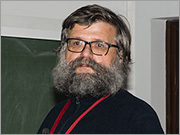
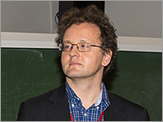
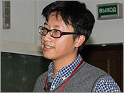
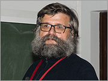

Math-Net.Ru
Персональный вход:
ФИО
Ваша организация: Математический институт им. В.А. Стеклова Российской академии наук
Международная конференция «Системы Аносова и современная динамика», посвященная 80-летию со дня рождения Дмитрия Викторовича Аносова
(19–23 декабря 2016 г., МИАН (ул. Губкина, д. 8) и ф-т математики НИУ ВШЭ (Усачева ул., д. 6), г. Москва)
- E-mail:
- topology-tashkent@mail.ru
- Website:
- http://topology.tdpu.uz/ru
- Схема проезда:
- Программный комитет
- Козлов Валерий Васильевич (председатель)
- Бухштабер Виктор Матвеевич (зам. председателя)
- Ильяшенко Юлий Сергеевич (зам. председателя)
- Григорчук Ростислав Иванович
- Организационный комитет
- Козлов Валерий Васильевич (председатель)
- Бухштабер Виктор Матвеевич (зам. председателя)
- Ильяшенко Юлий Сергеевич (зам. председателя)
- Григорчук Ростислав Иванович
- Организации
- 20 декабря 2016 г.
-

Lower bounds for Lyapunov exponents of flat bundles on curves
Anton Zorich, Alex Eskin, Maxim Kontsevich, Martin Möller
20 декабря 2016 г. 09:00, г. Москва, МИАН (ул. Губкина, д. 8)
-

Diophantine type of interval exchange maps and translation surfaces
S. Marmi
20 декабря 2016 г. 10:00, г. Москва, МИАН (ул. Губкина, д. 8)
-

Smooth models and the Anosov–Katok method
Benjamin Weiss
20 декабря 2016 г. 11:15, г. Москва, МИАН (ул. Губкина, д. 8)
-

Lower bounds for Lyapunov exponents of flat bundles on curves
- 21 декабря 2016 г.
-
Условия неинтегрируемости уравнений геодезических на однородных пространствах фуксовых групп
В. В. Козлов
21 декабря 2016 г. 09:00, г. Москва, МИАН (ул. Губкина, д. 8)
-
Emergence and Para-Dynamics
Pierre Berger
21 декабря 2016 г. 10:00, г. Москва, МИАН (ул. Губкина, д. 8)
-
 Lebesgue spectrum for area preserving flows on the two torus
Lebesgue spectrum for area preserving flows on the two torus
Bassam Fayad
21 декабря 2016 г. 11:15, г. Москва, МИАН (ул. Губкина, д. 8)
-
Условия неинтегрируемости уравнений геодезических на однородных пространствах фуксовых групп
- 22 декабря 2016 г.
-
Long-term behaviour of slow–fast systems with passages through resonances: Examples from charged particle dynamics
Anatoly Neishtadt
22 декабря 2016 г. 09:00, г. Москва, Факультет математики НИУ ВШЭ (Усачева ул., д. 6)
-
Topological and measurable aspects of multiple ergodic averages
Xiangdong Ye
22 декабря 2016 г. 10:00, г. Москва, Факультет математики НИУ ВШЭ (Усачева ул., д. 6)
-
Скорость деформации в динамических системах
Б. М. Гуревич, С. А. Комеч
22 декабря 2016 г. 11:15, г. Москва, Факультет математики НИУ ВШЭ (Усачева ул., д. 6)
-
Long-term behaviour of slow–fast systems with passages through resonances: Examples from charged particle dynamics